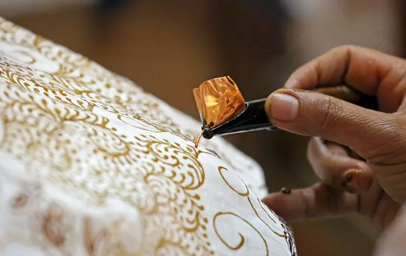

Makna dan Pentingnya Batik bagi Indonesia
Batik adalah salah satu karya seni tekstil tertua di Indonesia yang menggabungkan nilai estetika, filosofi, dan sejarah. Kain batik bukan sekadar pakaian, tetapi menjadi simbol identitas nasional yang mencerminkan keberagaman budaya dan kreativitas masyarakat Indonesia.
Dalam setiap helai batik, terdapat proses panjang yang melibatkan keterampilan tangan, ketelitian, dan kesabaran. Hal inilah yang membuat batik tidak hanya bernilai seni tinggi, tetapi juga memiliki makna mendalam bagi kehidupan masyarakat.
1. Sejarah Panjang Batik di Indonesia
Batik telah berkembang sejak ratusan tahun lalu, terutama di daerah Jawa seperti Yogyakarta, Solo, dan Pekalongan. Dahulu, batik hanya digunakan oleh kalangan bangsawan atau keluarga kerajaan. Motif tertentu bahkan hanya boleh digunakan oleh sultan atau kerabatnya.
Seiring waktu, batik mulai digunakan oleh masyarakat umum dan mengalami perkembangan motif yang semakin beragam. Kini, hampir setiap daerah memiliki ciri khas batik masing-masing, seperti:
- Batik Yogyakarta: Identik dengan warna gelap dan motif berfilosofi mendalam.
- Batik Pekalongan: Cenderung berwarna cerah dan dipengaruhi unsur budaya luar.
- Batik Cirebon: Terkenal dengan motif Mega Mendung yang filosofis.
- Batik Lasem: Memiliki pengaruh budaya Tionghoa yang sangat kuat.
2. Filosofi Mendalam di Balik Motif Batik
Keindahan batik bukan hanya pada polanya, tetapi juga maknanya. Setiap motif batik mengandung pesan, doa, dan harapan. Beberapa contoh di antaranya:
- Motif Parang: Melambangkan kekuatan, keberanian, dan semangat tak pernah menyerah.
- Motif Kawung: Mewakili kesucian dan keseimbangan hidup.
- Motif Truntum: Simbol cinta kasih yang tumbuh kembali.
- Motif Sido Mukti: Melambangkan harapan akan kebahagiaan dan kemakmuran.
Filosofi inilah yang membuat batik bukan sekadar kain, tetapi sebuah karya seni dengan jiwa dan cerita.
3. Pengakuan Dunia terhadap Batik Indonesia
Pada 2 Oktober 2009, UNESCO secara resmi menetapkan batik sebagai Warisan Budaya Takbenda Dunia. Pengakuan ini menandakan bahwa batik diakui sebagai budaya asli Indonesia yang memiliki nilai sejarah, teknik pengerjaan, dan makna yang sangat tinggi.
Tanggal 2 Oktober pun diperingati setiap tahun sebagai Hari Batik Nasional. Pada hari tersebut, masyarakat biasanya memakai batik sebagai bentuk rasa bangga dan cinta terhadap budaya bangsa.
4. Proses Pembuatan Batik yang Sarat Nilai Seni
Pembuatan batik adalah proses yang membutuhkan kesabaran dan keterampilan tinggi. Tahap pembuatannya meliputi:
- Perancangan motif oleh perajin.
- Penggambaran pola menggunakan canting dan malam (lilin).
- Pewarnaan secara bertahap.
- Pelepasan malam dengan proses pelorodan.
Karena proses yang rumit dan dikerjakan dengan tangan, sehelai batik tulis dapat memakan waktu dari beberapa minggu hingga beberapa bulan.
5. Mengapa Batik Penting untuk Generasi Masa Kini?
Bagi generasi sekarang, batik bukan hanya budaya, tetapi juga inspirasi. Batik semakin populer di dunia fashion modern—digunakan untuk pakaian kerja, dress, tas, sepatu, hingga aksesoris.
Dengan mengenakan batik, kita menunjukkan:
- Kebanggaan terhadap identitas bangsa.
- Penghargaan kepada para pengrajin lokal.
- Partisipasi dalam melestarikan budaya Indonesia.
6. Cara Melestarikan Batik
Kita bisa ikut menjaga batik melalui cara-cara sederhana seperti:
- Mengenakan batik pada acara formal maupun sehari-hari.
- Mempelajari sejarah dan motif batik dari berbagai daerah.
- Mendukung pengrajin batik dengan membeli produk asli.
- Mempromosikan batik melalui media sosial.
- Mengikuti workshop membatik untuk mengenal prosesnya secara langsung.
Dengan langkah-langkah ini, kita membantu memastikan batik tetap hidup dan dicintai oleh generasi mendatang.
Kesimpulan
Batik adalah lebih dari sekadar kain. Ia adalah identitas, warisan, dan kebanggaan bangsa Indonesia. Memahami nilai-nilai yang terkandung dalam batik membuat kita semakin menghargai perjuangan para perajin yang menjaga tradisi ini tetap lestari.
Batik adalah cerita, dan setiap motifnya adalah makna.
Kembali ke Beranda